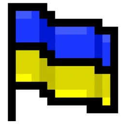
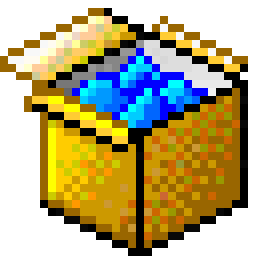

Ключові показники України (2024) Категорії статистики
Останні оновлення
Середня зарплата по регіонах — всі регіони (2024)
Регіони (до 4-х):
Показники:
Нормалізоване порівняння
Радарна діаграма
Категорії джерел
| Назва | Тип | Організація | Оновлено | Ліцензія | Посилання |
|---|
УкрДані v1.0
Ukrainian Statistical Data Platform
Відкрита платформа статистичних даних регіонів України. Мета — зробити офіційну економічну
статистику доступною, зрозумілою та придатною для аналізу через зручний веб-інтерфейс і REST API.
Місія та цілі
- Зробити офіційну статистику доступною для громадян, журналістів та дослідників
- Забезпечити доступність до публічних даних через REST API
- Візуалізувати тенденції розвитку регіонів України за 1998–2024 рр.
- Підтримувати принципи відкритих даних (Open Data / CC BY 4.0)
- Сприяти прозорості публічної статистики та її популяризації
Методологія збору даних
| Показник | Джерело | Частота | Методологія |
|---|---|---|---|
| Середня зарплата | Держстат | Щомісяця | Нарахована до вирахування податків |
| ВРП / ВВП | Держстат | Щорічно | У поточних цінах, млн грн; СНР-2008 |
| Безробіття | МОП / Держстат | Щоквартально | За методологією МОП, % від ЕАН |
| Інфляція (ІСЦ) | Держстат | Щомісяця | Індекс споживчих цін, грудень до грудня |
| Населення | Держстат | Щорічно | Наявне населення на 1 січня, тис. осіб |
| Держбюджет | Мінфін | Щорічно | Зведений держбюджет, млрд грн |
| Зовнішня торгівля | Держстат / НБУ | Щорічно | Товари та послуги, млрд USD |
| Індекс цін виробників | Держстат | Щомісяця | ІЦВ промислової продукції, % зміна |
Технічний стек
Повний стек від UI до бази даних — без сторонніх фреймворків на фронтенді.
HTML5 / CSS3
Семантична розмітка, CSS Variables для тем, Flexbox/Grid, Win98-стиль інтерфейс
Vanilla JavaScript (ES6+)
SPA-архітектура без фреймворків: роутер, стан, debounce, Blob API, async/await, fetch()
Chart.js 4
Лінійні, стовпчасті, кільцеві, накопичені, радарні графіки; dual-axis; динамічне оновлення
Python 3.12 + FastAPI
Асинхронний REST API; Swagger UI (/docs) та ReDoc; валідація Pydantic; CORS middleware
SQLite + SQLAlchemy 2
Async ORM (aiosqlite); 15 таблиць; єдиний файл ukrdata.db; легкий перехід на PostgreSQL
Uvicorn
ASGI-сервер для FastAPI; hot-reload у режимі розробки (--reload)

Залежності бекенду| Пакет | Версія | Призначення |
|---|---|---|
| fastapi | ≥0.111 | Web-фреймворк / REST API |
| uvicorn[standard] | ≥0.29 | ASGI-сервер |
| sqlalchemy | ≥2.0 | Async ORM |
| aiosqlite | ≥0.20 | Async-драйвер SQLite |
| python-multipart | ≥0.0.9 | Обробка форм / завантажень |
Зворотний зв'язок